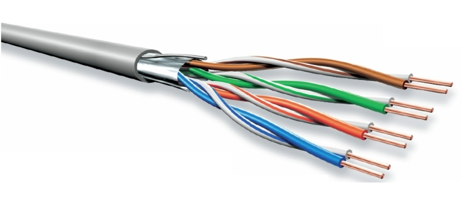

Il cavo Cat5
Il cavo Cat5 è un tipo di cavo di rete utilizzato per trasmettere segnali Ethernet ad alta velocità. La sigla "Cat" sta per "Categoria", e il numero "5" indica la versione del cavo secondo gli standard TIA/EIA-568. Il cavo Cat5 utilizza quattro coppie di fili in rame intrecciati e schermati, e ha una lunghezza massima di circa 100 metri. Il cavo Cat5 è stato introdotto nel 1995 ed è stato il primo cavo di rete ad utilizzare la tecnologia "Twisted Pair" per la trasmissione di dati ad alta velocità. Il cavo Cat5 può trasmettere dati a velocità fino a 100 megabit al secondo (Mbps) ed è utilizzato comunemente per la connessione di dispositivi di rete come computer, switch, router, modem, e altri dispositivi di rete.
